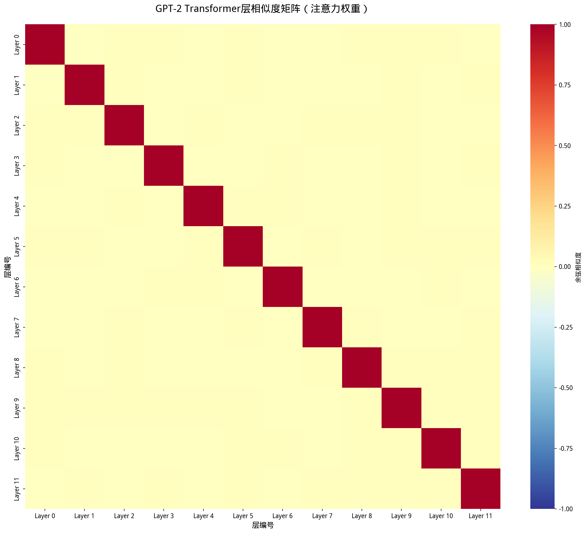

理解模型内部的层关系
相邻Transformer层平均相似度仅0.0879%，说明每层都在学习不同的特征
LayerNorm层之间的相似度>0.999，这是设计特性而非冗余
MLP层平均相似度1.1679%，注意力层1.0452%
注意：LayerNorm层的相似度高是正常的
| 排名 | 层1 | 层2 | 相似度 |
|---|---|---|---|
| 1 | h.6.ln_1.weight | h.7.ln_1.weight | 99.9353% |
| 2 | h.5.ln_2.weight | h.6.ln_2.weight | 99.9250% |
| 3 | h.6.ln_2.weight | h.7.ln_2.weight | 99.9210% |
| 4 | h.5.ln_1.weight | h.6.ln_1.weight | 99.9119% |
| 5 | h.9.ln_2.weight | h.10.ln_2.weight | 99.8954% |
| 6 | h.8.ln_2.weight | h.9.ln_2.weight | 99.8945% |
| 7 | h.3.ln_1.weight | h.4.ln_1.weight | 99.8895% |
| 8 | h.7.ln_2.weight | h.8.ln_2.weight | 99.8833% |
| 9 | h.7.ln_1.weight | h.8.ln_1.weight | 99.8788% |
| 10 | h.3.ln_2.weight | h.4.ln_2.weight | 99.8744% |
观察模型如何逐层变化
| 层转换 | 相似度 | 解读 |
|---|---|---|
| Layer 0 → 1 | 差异较大，都很重要 | |
| Layer 1 → 2 | 差异较大，都很重要 | |
| Layer 2 → 3 | 差异较大，都很重要 | |
| Layer 3 → 4 | 差异较大，都很重要 | |
| Layer 4 → 5 | 差异较大，都很重要 | |
| Layer 5 → 6 | 差异较大，都很重要 | |
| Layer 6 → 7 | 差异较大，都很重要 | |
| Layer 7 → 8 | 差异较大，都很重要 | |
| Layer 8 → 9 | 差异较大，都很重要 | |
| Layer 9 → 10 | 差异较大，都很重要 | |
| Layer 10 → 11 | 差异较大，都很重要 |
颜色越红表示相似度越高，越蓝表示差异越大

发现：层相似度很低
建议：
发现：每层都有独特作用
建议：
发现：MLP层更稳定
建议：
发现：层间差异适中
建议：
余弦相似度测量两个向量方向的相似性，公式为：
层相似度分析可以帮助我们：
LayerNorm的作用是标准化：
其中 γ 和 β 是可学习参数，但它们的作用是"标准化"，所以不同层的值相近是正常的，不是冗余！